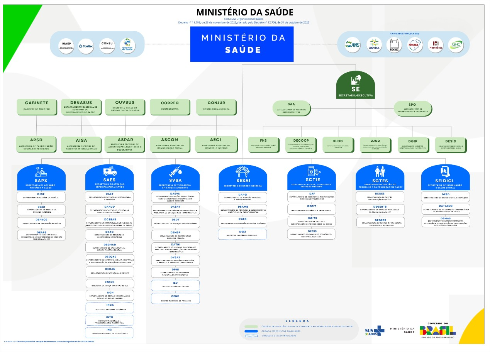

Mapa Estrutural do Ministério
Órgãos de Assistência Direta ao Ministro
Gabinete, DENASUS, OUVSUS, Corregedoria, CONJUR
🟢 Gabinete do Ministro
Responsável por assessorar diretamente o Ministro da Saúde. Coordena agendas, decisões estratégicas, articulação política e comunicação institucional.
🟢 DENASUS
Departamento Nacional de Auditoria do SUS. Realiza auditorias para fiscalizar o uso correto dos recursos públicos e garantir qualidade nos serviços.
🟢 OUVSUS
Ouvidoria-Geral do SUS. Canal de comunicação entre o cidadão e o SUS. Recebe reclamações, denúncias, sugestões e elogios.
🟢 Corregedoria
Apura irregularidades administrativas cometidas por servidores e aplica medidas disciplinares quando necessário.
🟢 CONJUR
Consultoria Jurídica. Presta assessoramento jurídico ao Ministério, analisando leis, contratos e atos administrativos.
Secretaria-Executiva (SE)
Coordenação administrativa, orçamentária e estratégica
Coordena a gestão administrativa, orçamentária e estratégica do Ministério.
SAA
Subsecretaria de Assuntos Administrativos. Gerencia recursos humanos, contratos, patrimônio e logística.
SPO
Subsecretaria de Planejamento e Orçamento. Coordena o planejamento estratégico e a execução orçamentária.
FNS
Fundo Nacional de Saúde. Administra e repassa recursos financeiros para estados e municípios.
DECOOP
Departamento de Cooperação Técnica. Promove parcerias nacionais e internacionais.
DLOG
Departamento de Logística. Responsável pela aquisição e distribuição de insumos (vacinas e remédios).
DJUD
Departamento Jurídico. Acompanha ações judiciais relacionadas à saúde pública.
DGIP
Departamento de Gestão Interfederativa. Articula a gestão do SUS entre União, estados e municípios.
DESID
Departamento de Economia da Saúde. Analisa custos e sustentabilidade financeira do sistema.
Secretarias Finalísticas
Atenção Primária, Especializada, Vigilância, TI, Saúde Indígena
🔵 SAPS
Secretaria de Atenção Primária à Saúde. Coordena políticas como Estratégia Saúde da Família e vacinação.
PORTAL SAPS🔵 SAES
Secretaria de Atenção Especializada à Saúde. Média e alta complexidade (hospitais e cirurgias).
🔵 SVSA
Secretaria de Vigilância em Saúde e Ambiente. Controle de doenças (dengue, COVID-19) e epidemiologia.
🔵 SESAI
Secretaria de Saúde Indígena. Políticas específicas respeitando características culturais.
🔵 SCTIE
Secretaria de Ciência, Tecnologia e Inovação. Pesquisa e incorporação de tecnologias no SUS.
🔵 SGTES
Secretaria de Gestão do Trabalho e da Educação na Saúde. Formação e qualificação de profissionais.
UNA-SUSSEIDIGI
Secretaria de Informação e Saúde Digital. Transformação digital do SUS, prontuários eletrônicos e DATASUS.
ESUS PEC & Telemedicina
Capacitação técnica para o uso do prontuário digital e telessaúde.